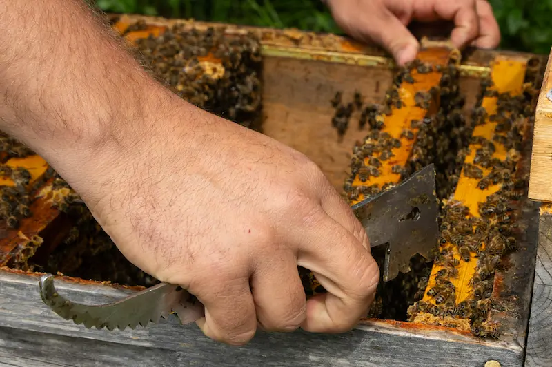
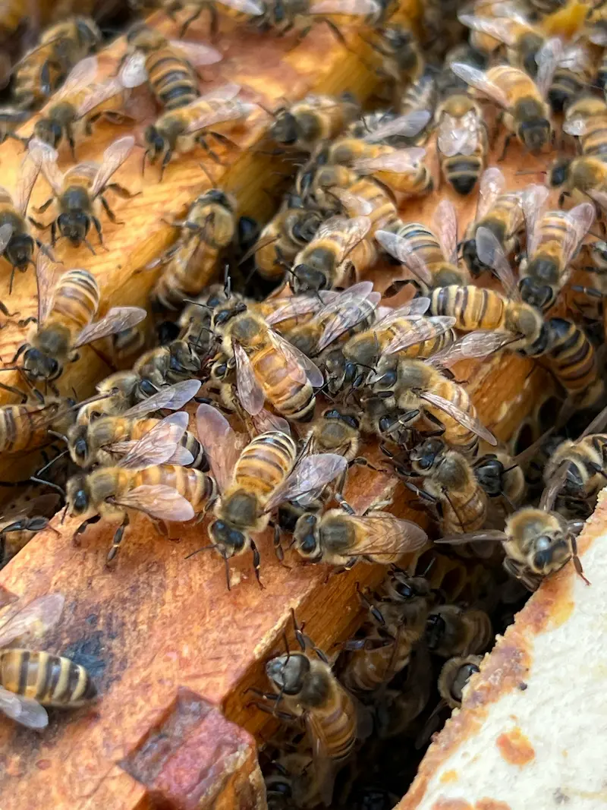

UK Beekeeping Guides & Seasonal Tips
We offer practical guides to honeybee conservation and beginner-friendly beekeeping. Our mission is to raise awareness about the vital role bees play in pollination and food production, while offering tips and tools to help you care for your hives, support pollinators, and learn the basics of beekeeping — one hive at a time.

Our Purpose
BeezKnees exists to help you care for your hives and protect pollinators. We combine practical knowledge with conservation to make beekeeping easier, smarter, and more impactful. Whether you're a beginner or an experienced keeper, we provide expert tips, seasonal tasks, and disease awareness to support your journey — and the bees. Our goal is to build confidence, inform beekeepers and inspire action to safeguard our pollinators for future generations.
HiveTag Members Area
HiveTag is the BeezKnees members area app for recording apiaries, hives and inspections in one place. It’s built for UK hobbyists and beginners who want simple records now — with optional Premium NFC hive tag support later.
- Record hives and inspections from your phone (in the apiary).
- Track seasonal notes, problems and actions so nothing gets missed.
- Free tier for getting started, with Premium for unlimited use and NFC tags.
Explore More.....

About Us
BeezKnees is a friendly guide to beekeeping and pollinator protection. Created by hobbyist beekeeper Colin Chorley, our goal is to make beekeeping simple, accessible, and rewarding. Whether you're starting your first hive or curious about bees, we’re here to help.
Read our story
How You Can Help
You don’t need to be a beekeeper to support honeybees. Simple actions like planting seasonal flowers, avoiding pesticides, and offering water or nesting sites can make a big difference. You can also support local beekeepers and raise awareness to help protect pollinators.
Help the bees
An Apiary Year
Beekeeping changes with the seasons. From winter checks and early spring feeding to swarm control in summer and preparing hives for autumn, each month brings key tasks. Our calendar guides you through seasonal jobs to keep your bees healthy all year.
View the calendarFrequently Asked Questions
Is BeezKnees UK-focused?
Yes — the guides are written for UK seasons, forage patterns and common beginner questions, with links to trusted UK resources where appropriate.
When is the best time to start beekeeping in the UK?
Most beginners start planning in winter and spring. The best time to get bees is usually spring to early summer, once temperatures and forage improve.
Do I need a garden to keep bees?
No. Many beekeepers keep hives in apiaries, farmland margins or shared sites. You do need permission, suitable forage nearby and a safe, sensible placement.
What equipment do I need to begin?
At minimum you’ll need a hive, suit/veil, gloves, smoker, hive tool and a way to feed if needed. Our equipment guide breaks this down into essential vs optional.
How often should I inspect my hive?
In spring and summer, inspections are often weekly (weather permitting). In colder months, inspections reduce — the monthly calendar explains what’s normal.
What should I do if I see a swarm?
Don’t panic. Keep people and pets away, and contact a local swarm collector. Our swarm page explains what to do and what not to do.
What is HiveTag?
HiveTag is the BeezKnees members area for recording apiaries, hives and inspections. There’s a free tier, with optional Premium for unlimited use and NFC hive tags.
How can I help bees if I don’t keep hives?
Plant bee-friendly flowers, avoid pesticides where possible, provide water, and support local conservation. Our ‘Help the Bees’ page has practical UK ideas.